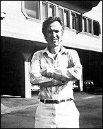
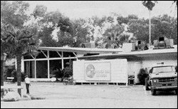

CHAPTER
TWO
The Rise of the Messengers
Hubbard's health had deteriorated over the years. He
continued to suffer from heavy colds, and chain-smoked three to four packs of cigarettes a
day. In 1965, he was bedridden and thought he was going to die. 1 This feeling recurred almost annually.
Early in 1967 he was again bedridden, this time because of drug abuse. In 1972, he went
into hiding in New York for almost a year, again very ill for much of this period. Shortly
after his return to the ship at the end of 1973, he hurt himself badly in a motorcycle
accident. He had suffered a heart attack in 1975, and the attendant embolism had forced
him to take anticoagulant drugs for a year. His bursitis had never ceased to plague him,
and he was usually grossly overweight.
 David Mayo (right) had been involved
in Scientology since the late 1950s. He had joined the Sea Org soon after its inception,
becoming one of the few Class 12 Auditors. By the time the Flag Land Base was established
in Florida, in 1975, Mayo had become the Senior Case Supervisor Flag. He was the top dog
in the world of Scientology "Tech."
In September 1978, a confidential telex ordered Mayo
to quit Florida immediately for Los Angeles. A Commodore's Messenger met him at the
airport. As they drove down the freeway to Palm Springs, the Messenger apologized to Mayo,
but asked him to put on a pair of dark glasses. It was the middle of the night, but Mayo
humored his escort. The glasses had been painted over. Top security was being maintained.
Mayo dozed, until the driver braked hard because he had nearly overshot the freeway exit.
The glasses flew off and Mayo had to reassure the driver that he had not seen the Indio
exit sign.
Mayo was told that Hubbard was very ill, and was given
Hubbard's "case folders" to study. Mayo was to determine what auditing errors
Hubbard's current condition stemmed from. He was taken to see the Commodore: "I must
admit I got quite a shock, because the last time I'd seen him he'd been full of energy and
active and it was a surprise to see him lying on his back .... He was lying there almost
in a coma, although he had his eyes open, and when I went in the room and said hello to
him his eyes flickered and he gave me a little smile."
Hubbard had suffered another pulmonary embolism, a
blood clot in the artery to the lungs. Kima Douglas had once again saved his life. This
time she was unable to overrule his refusal to go to hospital, so, imitating the doctors
at Curaçao, she fed him a huge dose of his pills. He drifted into a coma. Douglas
stripped an electric wire, with the desperate idea that he could be shocked back to life.
She stayed by him for forty-eight hours. Scientologist medical doctor Eugene Denk was
rushed from Los Angeles, blindfolded, to relieve her. 2
While Kima Douglas and Dr. Denk ministered to
Hubbard's physical needs, Mayo devised an auditing program and set to work. He concluded
that the New Era Dianetic auditing had been to blame, and it was decided that Dianetics
should not be given Clears, because of its deleterious effect upon them. This was not
heartening to the thousands of Clears who had paid huge amounts for hundreds of hours of
Dianetics.
The procedures brought into being by Mayo and Hubbard
became known as New Era Dianetics for Operating Thetans, ("NED for OTs," or,
most simply, "NOTs"). Mayo says that what they actually concentrated upon during
the auditing were misconceptions; somehow the emphasis changed to Body Thetans when
Hubbard helped Mayo rework his notes. Still, Mayo was made Senior Case Supervisor
International, an entirely new position, as a mark of Hubbard's gratitude.
 While recovering, Hubbard approved the
purchase of the Massacre Canyon Inn resort complex at Gilman Hot Springs (right).
There were several buildings, including a motel and a hotel, set in 520 acres and
including a twenty-seven-hole golf course. The property was about forty miles from La
Quinta, near the small town of Hemet. The purchase price was $2.7 million.
At the end of 1978, the CMO Rehabilitation Project
Force started to prepare Gilman. The CMO Special Unit, the channel through which Hubbard
managed Scientology, moved there the following February. Mayo continued to audit Hubbard,
and had to move in with the CMO.
Hubbard went even deeper into hiding for a few weeks
in March 1979, travelling with a CMO escort to nearby Lake Elsinore. In April, he moved to
an apartment in Hemet, where he lived with about ten Messengers. The security around him
was extremely tight. Very few people knew his whereabouts; by this time he was even hiding
from the Guardian's Office.
In February, Hubbard, at last recovering from his
illness, had turned his attention back to the worldwide Scientology scene. The CMO did a
statistical analysis for him. How many people were receiving auditing and training? How
much money was being made? How many new people were coming into Scientology? Hubbard did
not like what he saw. The number of active Scientologists was diminishing, as was the
amount of money being made. Students were abandoning their courses and demanding refunds.
The obvious reasons were the twenty-fold increase in prices since November 1976, and
revelations in the media about the Guardian's Office. Hubbard ignored the obvious however,
and issued the "Change the Civilization Eval[uation]." 3 The Guardian's Office had let him down,
and so had Sea Org management. The Commodore's Messenger Organization had been concerned
with Hubbard's personal welfare, and with his personal projects (the films, for instance).
Now they seemed to him to be the remaining loyal unit of his private army, and they were
to enforce his will upon the renegades. Hubbard reprimanded the CMO for issuing orders
under their own title. Hubbard must not be seen to be managing Scientology under any
circumstances. The pretence of his resignation from Church management in 1966 had to be
rigorously maintained. Otherwise he would be wide open to the extensive litigation against
Scientology. Worst of all, he was implicated in the case against his wife and her cohorts
in the Guardian's Office, and he too might be indicted. He had already been named (along
with twenty-nine others) as an as yet unindicted coconspirator.
The CMO were a latter-day Praetorian Guard, at first
protecting and serving the whims of their Emperor, but gradually becoming the most
powerful element in the hierarchy of command. Long the interface between Hubbard and the
rest of the Church, part of the CMO became the senior management body: the Commodore's
Messenger Organization International, or CMO Int. But as the Commodore's Messenger
Organization was quite obviously connected to the Commodore, they had to find a new title.
So the Watchdog Committee (WDC) came into being, in April 1979. It consisted solely of the
senior executives of CMO Int.
The function of WDC was to "put senior management
back on post." They did this by absorbing all top management posts. The members of
the Watchdog Committee remained anonymous, and many Scientologists thought Hubbard was in
fact the mysterious Chairman WDC.
In July 1979, a member of CMO issued a directive
seeking to explain the rather contradictory notion that although CMO was in no way
involved in management, it could give orders to any of Scientology's International
Management bodies. Early in 1978, Hubbard had reinforced their position by approving an
order which made them answerable only to him, and urging the compliance of all other Sea
Org units with CMO orders. The rule was basically obey first, ask questions later, if at
all. 4
Hubbard's orders grew progressively more wild. Gerald
Armstrong was in the CMO at Gilman: "In the summer of 1979, on the orders of Hubbard
. . . I became involved in a project to build Mr. Hubbard a completely new house near
Hemet. I was personally involved with the architectural plans for this property and saw an
order from Mr. Hubbard to have built around the property a high block wall with openings
for gun emplacements."
Amongst Hubbard's requirements were that the house be
"in a nonblack area, dust-free, defensible, with no surrounding higher areas, and
built on bedrock."
To maintain security, Hubbard even stopped seeing his
wife, shortly before she changed her plea to an admission of guilt. They last saw each
other at Gilman in August 1979. Despite her years of faithful service, and her willingness
to take the rap for him, Hubbard cast her off. Nonetheless, she retained control of the
still powerful Guardian's Office, and was able to remove the Deputy Commanding Officer of
the CMO for meddling in GO affairs. 5
In September 1979, nine of the indicted GO executives
and staff, led by Mary Sue Hubbard, signed a stipulation admitting their involvement in
the break-ins, burglaries, thefts and buggings. By their admissions they stopped further
investigation into their numerous other misdeeds. They also avoided a drawn out trial with
the inevitable adverse publicity. The 282 page stipulation revealed the story of the
infiltration of government agencies, in startling detail. In December, the GO nine were
sentenced. Agent Sharon Thomas received the shortest prison term--six months. The others,
including Mary Sue Hubbard, were sentenced to four and five year terms. They managed to
stall the day by appealing the sentences.
With the pressure building, Hubbard issued an ominous
warning from his secret headquarters, "The Purification Rundown and Atomic War."
The faithful were summoned to meetings in Orgs the world over to hear Hubbard's terrible
message. Executives in full dress Sea Org uniform spoke to groups of frightened
Scientologists. The Bulletin began: "I want Scientologists to live through World War
III." 6
Hubbard went on to make it perfectly clear that he
held out very little hope for the world. There was going to be a nuclear war very, very
soon. He confidently asserted that "those who have a full and complete Purification
Rundown will survive where others not so fortunate won't. And that poses the
interesting probability that only Scientologists will be functioning in areas experiencing
heavy fallout in an Atomic War."
In fact, Hubbard's "Personal Communicator"
visited several principal Sea Org executives and told them that if they did not raise
Scientology's stats by 540 percent in six months, then the world would end. They did not,
and it did not, and in later reissues the phrase quoted above was changed to "those
who have had a full and complete Purification Rundown could fare better than
others not so fortunate. And that poses the interesting probability that only
Scientologists will have had the spiritual gain that would enable them to function
in areas experiencing heavy fallout in an Atomic War."
At about the time that the "Purification Rundown
and Atomic War" was invoked in an effort to galvanize Scientologists into action, the
GO predicted an FBI raid on the Gilman complex. It seemed likely that Hubbard would be
indicted either by a New York grand jury investigating Scientology harassment of author
Paulette Cooper, or a Florida grand jury investigating Scientology's dealings in
Clearwater.
There was a panic at Gilman Hot Springs to remove any
material demonstrating Hubbard's management of Scientology. A massive document shredder
was moved to Gilman Hot Springs. The crew affectionately called it "Jaws."
Anything which connected Hubbard to the La Quinta or Gilman properties, or to the
Guardian's Office; any order, or anything even resembling an order from Hubbard had to go,
and accordingly tens of thousands of documents were shredded. The Messenger logs, which
were the painstaking record of every verbal order given by the Commodore to his
Messengers, were buried for safe keeping. 7
These logs have never come under public scrutiny.
Gerald Armstrong was the head of the Household Unit,
which was preparing a house on the Gilman property for Hubbard's occupation. One of
Armstrong's juniors was perplexed when she found a cache of boxes containing faded Hubbard
letters and the like. She asked Armstrong if this material should be shredded. Armstrong
was amazed and delighted to find twenty boxes packed with old letters, diaries,
photographs, even some of Hubbard's baby clothes. 8
At last an accurate and fully documented account of
the remarkable exploits of the Founder would be possible. The fabrications of conspiring
government agencies could be disproved once and for all. Armstrong sent a request to
Hubbard asking permission to establish an archive with this material at its core. Hubbard
granted the request. The process eventually discredited Hubbard's fictional autobiography
for good.
Shortly thereafter in February or March 1980, Hubbard
hightailed it out of his apartment in Hemet, with the two Messengers who were "on
Watch," Pat and Annie Broeker. 9
The Broekers had been in Scientology for a long time. Annie had been a Messenger on the
ship. Hubbard disappeared without trace. He probably left because of the strong
possibility that he would be subpoenaed by the Paulette Cooper grand jury in New York.
Armstrong was busy with a series of projects,
including the Nobel Peace Prize Project which was intended to win the Prize for Hubbard's
development of the Purification Rundown. Increasingly stringent measures were taken to
conceal Hubbard's control of Scientology. Armstrong was also assigned to "Mission
Corporate Category Sort-Out" (MCCS). Members of the Guardian's Office Legal Bureau
and of the L. Ron Hubbard Personal Office met with Hubbard's attorney to discuss strategy.
They were trying to cover the tracks of the Religious Research Foundation, and other
dubious or downright illegal schemes, which had poured Church of Scientology money into
Hubbard's private accounts. 10
MCCS started an eddy which would become a tidal wave,
sweeping away the majority of veteran Scientologists. The entire corporate structure was
to be changed in a desperate attempt to avoid the consequences of Guardian's Office
activities, and the ensuing concerted legal action against the corporate entity of which
it was part, the Church of Scientology of California, the corporate heads of which were GO
executives.
Hubbard dabbled with a follow-up to the Purification
Rundown, called the Survival Rundown, but most of the work was done by his Technical
Compilations Unit at Gilman Hot Springs. After lengthy surveys, the new Rundown was
released with illustrations of an American Indian paddling a canoe, or loosing an arrow at
a buffalo. Unfortunate choices as examples of survival. The "Purif" had been
advertised with a waterfall, unintentionally suggesting an ad for menthol cigarettes.
During the summer, Armstrong's growing collection of
documents relating to the life and times of L. Ron Hubbard was appraised by a
Scientologist collector, who valued it at around $5 million. MCCS were toying with the
idea of creating a Trust to legitimize some of the immense payments being made to Hubbard.
11
On July 16, 1980, the GO, which had precious little to
celebrate, was able to rejoice with the news that the British government's use of the
Aliens Act against Scientology was finally over. After twelve years, foreign
Scientologists could once more enter Britain legally. However, the restrictions on
Hubbard's re-entry were not lifted.
Hubbard was beginning to let slip clues to the
terrible truth of the OT levels. He issued a Bulletin called "The Nature of a
Being" in which he quite publicly, yet mystifyingly, declared that "a human
being . . . is not a single unit being." 12
Plans were underway to film Revolt in the Stars, volcanic eruptions and all.
Hubbard itched to make OT 3 public.
Hubbard continued railing against psychiatry:
"Almost every modern horror crime was committed by a known criminal who had been in
and out of the hands of psychiatrists and psychologists often many times .... Spawned by
an insanely militaristic government, psychiatry and psychology find avid support from
oppressive and domineering governments .... The credence and power of psychiatry and
psychology are waning. It hit its zenith about 1960: then it seemed their word was law and
that they could harm, injure, and kill patients without restraint." Hubbard assured
his readers that his own work had been a major reason for a purported decline of
psychiatry and psychology. He added, "At one time they were on their way to turning
every baby into a future robot for the manipulation of the state and every society into a
madhouse of crime and immorality." 13
In October 1980, the Chairman WDC caused much
rejoicing by making the enormous price cuts mentioned earlier. Scientology was still not
cheap, but it was a great deal cheaper, and the monthly price rises had stopped. It looked
as if the Scientology world was finally going to right itself. Many thought that
"LRH" was "back on the lines." In fact, quite the opposite was true.
Omar Garrison, who had already written two books
favorable to Scientology, was now contracted to write Hubbard's biography, using the
enormous collection of material discovered and gathered by Gerald Armstrong. The contract
negotiations were elaborate, with Mary Sue Hubbard representing both her husband to the
publisher, and the publisher to Garrison. The publisher was to be Scientology
Publications, Denmark, a subsidiary of the Church of Scientology, though its executives
knew nothing of the negotiations made by Mary Sue on their behalf.
Garrison was firm in his approach, as he later said:
"I wasn't prepared to write a eulogy for Mr. Hubbard... it would be like trying to
write a biography of Christ for a very fanatical Christian organization... they agreed
that I can [sic] write it without any restriction." 14
The day after the contract was signed, on October 31,
1980, the Internal Revenue Service placed a lien on the Cedars of Lebanon complex, the
huge old hospital which by then housed Scientology's Los Angeles operation. Within a
fortnight, the Scientologists' appeal against the IRS tax assessment for the years
1970-1972 went to court.
Hubbard's written Scientology output for 1980 was
small. A few already lengthy Confessional lists were extended on his instruction, and
there were various pronouncements about drugs. He kept busy with other matters. The first
was an attempt at writing the longest science fiction novel of all time. He later boasted
to A.E. van Vogt that it had taken him only six weeks to write. 15 It is rumored that Hubbard did not
even read the proofs, leaving this to his close confidant, Messenger Pat Broeker. But how
could a Messenger alter the words of the great OT? Perhaps Battlefield Earth is
the longest science fiction novel ever written. Certainly, some reviewers found it among
the most boring, and possibly the most turgid. One headed his review, succinctly,
"Brain Death." In his history of science fiction, Trillion Year Spree,
Brian Aldiss gave a good synopsis of the novel:
The Psychlos, thousand pound alien monsters
with "cruelty" fuses in their solid bone skulls and a penchant for shooting the
legs off horses one at a time, have taken over Earth. The Psychlos are materialists,
miners and manipulators . . . they are baddies, there to be shot and killed in the cause
of freedom. Fighting for humankind is Johnnie Goodboy Tyler, a young, well-muscled hero,
supported by a bunch of mad Scots and Russians, brave fighters and dreadful caricatures to
the last man. In the course of the story, Johnnie gets the girl... frees the Earth, wreaks
vengeance on the Psychlos' home planet, and eventually gets to own the Galaxy. Just a
simple boy-makes-good story. A bit like Rambo.
When Scientology's Bridge Publications printed the
paperback issue, the over-muscled figure of Johnnie on the cover was topped by a very
Hubbard-like head.
Hubbard's second work of 1980 was somewhat shorter.
Hubbard had decided that society lacked a moral code, and wrote The Way to Happiness,
for public distribution. The lack of mention of Scientology or Dianetics is striking, and
a publishing front was even developed so that the booklet would not be seen to emanate
from the Scientology Church. The booklet lays out a series of twenty-one maxims from
"Take Care of Yourself" to "Flourish and Prosper," each with a page or
two of explanation. It includes the unoriginal and awkwardly phrased "Try Not to Do
Things to Others That You Would Not Like Them to Do to You." Most of the advice is
sensible if obvious, and much of it Hubbard had ignored throughout his life. The maxim
about lying is carefully worded: "Do not tell harmful lies." At the end of each
explanation is a summating phrase. "Do Not Murder" is followed by "The way
to happiness does not include murdering your friends, your family, or yourself being
murdered." The booklet is sugary, but harmless enough. It certainly does not reflect
the morality Hubbard instilled into his followers, least of all in B-1, the Intelligence
section of the Guardian's Office. Just after the completion of The Way to Happiness,
Guardian Jane Kember and Deputy Guardian for Information World Wide, Mo Budlong, were
sentenced to two to six years for "burglary, aiding and abetting." By following
Hubbard's instructions they had violated point nine of The Way to Happiness:
"Don't Do anything Illegal."
FOOTNOTES
Additional sources: Mayo
"Recollections," AAC Journal, April 1985; "An Open Letter to All
Scientologists from David Mayo," 1983; Armstrong affidavit, May 1983; John Nelson
taped talk, 13 August 1983; interview with John Nelson, East Grinstead, January 1984
1. Hubbard in Clearing Course
film
2. Miller interview with Kima
Douglas
3. Technical Bulletins of
Dianetics & Scientology vol. 12, p. 307, Nelson interview; interview, former CMO
executive
4. Central Bureaux Order 588,
"Flag Senior Management Command Lines," 26 July 1979; CMO Executive Directive
92, "CMO Regulations," 11 January 1978; Central Bureaux Order 621, "Bypass
of Management Sector Handling Of," 29 November 1979
5. Mary Sue Hubbard in vol. 6
of transcript of Church of Scientology of California vs. Gerald Armstrong,
Superior Court for the County of Los Angeles, case no. C 420153, p.876
6. HCOB, "The
Purification Rundown and Atomic War," 3 January 1980
7. Sullivan in Armstrong
vol. 19A, pp.3053ff
8. Armstrong vol. 9,
pp. 1492ff & 1555; Sullivan in Armstrong vol. 19, p.3246
9. Mary Sue Hubbard in Armstrong
vol. 6, p.886
10. Armstrong affidavit, 19
October 1982
11. Armstrong vol.
14, pp.2272ff
12. HCOB, "The
Nature of a Being," 30 July 1980
13. HCOB, 29 July 1980
14. Omar Garrison in Armstrong
vol. 21, pp.3595-7
15. A.E. van Vogt letter to
the author |